Rows: 14793
Columns: 30
{'crs': <Geographic 2D CRS: EPSG:4326>
Name: WGS 84
Axis Info [ellipsoidal]:
- Lat[north]: Geodetic latitude (degree)
- Lon[east]: Geodetic longitude (degree)
Area of Use:
- name: World.
- bounds: (-180.0, -90.0, 180.0, 90.0)
Datum: World Geodetic System 1984 ensemble
- Ellipsoid: WGS 84
- Prime Meridian: Greenwich
, 'total_features': 14793, 'null_geometry': 0, 'bounds': [72.6891774996617, 5.747699600363059, 105.5448089014279, 21.691491499609185], 'geom_types': {'LineString': 14793}}
| missing_count | missing_frac | |
|---|---|---|
| StreetImageLink | 0 | 0.0 |
| SpeedLimit | 0 | 0.0 |
| LandUse_URBAN | 0 | 0.0 |
| LandUse_RURAL | 0 | 0.0 |
| RoadClass_trunk | 0 | 0.0 |
| RoadClass_secondary | 0 | 0.0 |
| RoadClass_primary | 0 | 0.0 |
| RoadClass_motorway | 0 | 0.0 |
| is_speed_problem | 0 | 0.0 |
| urban_weighted_risk | 0 | 0.0 |
| urban_flag | 0 | 0.0 |
| exposure_risk | 0 | 0.0 |
| speed_risk_index | 0 | 0.0 |
| log_sample_size | 0 | 0.0 |
| log_weighted_sample | 0 | 0.0 |
| speed_excess_median | 0 | 0.0 |
| speed_excess_85 | 0 | 0.0 |
| RankedPercentile | 0 | 0.0 |
| Percentile | 0 | 0.0 |
| PercentOverLimit | 0 | 0.0 |
| OBJECTID | 0 | 0.0 |
| SampleSize_avg | 0 | 0.0 |
| WeightedSample | 0 | 0.0 |
| MedianSpeed | 0 | 0.0 |
| region | 0 | 0.0 |
| F85thPercentileSpeed | 0 | 0.0 |
| AnalysisStatus | 0 | 0.0 |
| NumberOverLimit | 0 | 0.0 |
| Shape_Length | 0 | 0.0 |
| geometry | 0 | 0.0 |
| count | mean | std | min | 25% | 50% | 75% | max | |
|---|---|---|---|---|---|---|---|---|
| SpeedLimit | 14793.0 | 5.738525e-01 | 1.618123e-01 | 0.000000 | 0.600000 | 0.600000 | 0.700000 | 1.000000e+00 |
| MedianSpeed | 14793.0 | 2.305553e-16 | 1.000034e+00 | -2.819982 | -0.641289 | 0.142113 | 0.740095 | 2.149292e+00 |
| F85thPercentileSpeed | 14793.0 | -5.840735e-16 | 1.000034e+00 | -3.078924 | -0.612331 | 0.154593 | 0.734968 | 2.241179e+00 |
| PercentOverLimit | 14793.0 | 2.438631e-01 | 2.666779e-01 | 0.000000 | 0.000000 | 0.149996 | 0.424995 | 1.000000e+00 |
| WeightedSample | 14793.0 | 3.658531e+06 | 3.443544e+07 | 0.000000 | 63038.700000 | 237747.376857 | 854050.721695 | 1.551703e+09 |
| SampleSize_avg | 14793.0 | 5.511377e+05 | 2.646279e+06 | 500.000000 | 31507.000000 | 124614.500000 | 357803.000000 | 9.031018e+07 |
| RankedPercentile | 14793.0 | 3.906910e+01 | 3.262734e+01 | 0.008645 | 3.881397 | 35.857538 | 67.825035 | 9.979253e+01 |
| Shape_Length | 14793.0 | 4.178624e-02 | 6.950586e-02 | 0.000000 | 0.005843 | 0.014499 | 0.046397 | 1.000000e+00 |
| SpeedLimit | MedianSpeed | F85thPercentileSpeed | PercentOverLimit | WeightedSample | SampleSize_avg | RankedPercentile | Shape_Length | |||||||||||||||||||||||||||||||||
|---|---|---|---|---|---|---|---|---|---|---|---|---|---|---|---|---|---|---|---|---|---|---|---|---|---|---|---|---|---|---|---|---|---|---|---|---|---|---|---|---|
| count | mean | std | min | max | count | mean | std | min | max | count | mean | std | min | max | count | mean | std | min | max | count | mean | std | min | max | count | mean | std | min | max | count | mean | std | min | max | count | mean | std | min | max | |
| region | ||||||||||||||||||||||||||||||||||||||||
| Maharashtra | 3264 | 0.367969 | 0.159833 | 0.0 | 0.9 | 3264 | -0.611668 | 0.798435 | -2.317801 | 1.661018 | 3264 | -0.592640 | 0.807315 | -2.332728 | 1.674623 | 3264 | 0.334475 | 0.310738 | 0.0 | 1.0 | 3264 | 5.297932e+05 | 1.750573e+06 | 382.235101 | 2.602851e+07 | 3264 | 129081.142695 | 4.241026e+05 | 500.0 | 4894735.5 | 3264 | 0.587433 | 0.244377 | 0.041397 | 1.000000 | 3264 | 0.068359 | 0.090614 | 0.003471 | 0.837017 |
| Thailand | 11529 | 0.632141 | 0.104720 | 0.0 | 1.0 | 11529 | 0.173171 | 0.983289 | -2.819982 | 2.149292 | 11529 | 0.167784 | 0.985467 | -3.078924 | 2.241179 | 11529 | 0.218210 | 0.246859 | 0.0 | 1.0 | 11529 | 4.544315e+06 | 3.895021e+07 | 0.000000 | 1.551703e+09 | 11529 | 670627.046055 | 2.978241e+06 | 508.0 | 90310185.0 | 11529 | 49.963728 | 28.774198 | 0.008645 | 99.792531 | 11529 | 0.034263 | 0.060152 | 0.000000 | 1.000000 |
Duplicate row count: 0
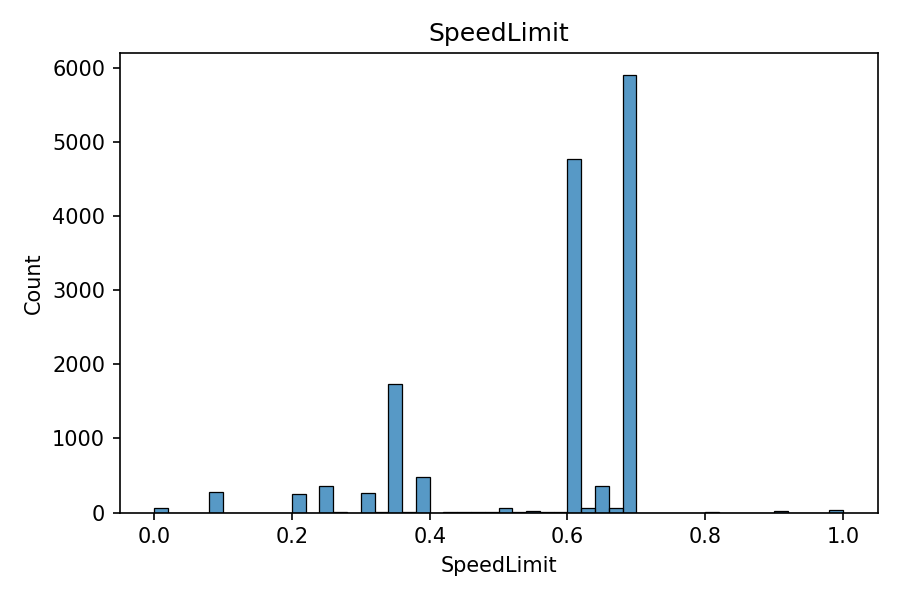
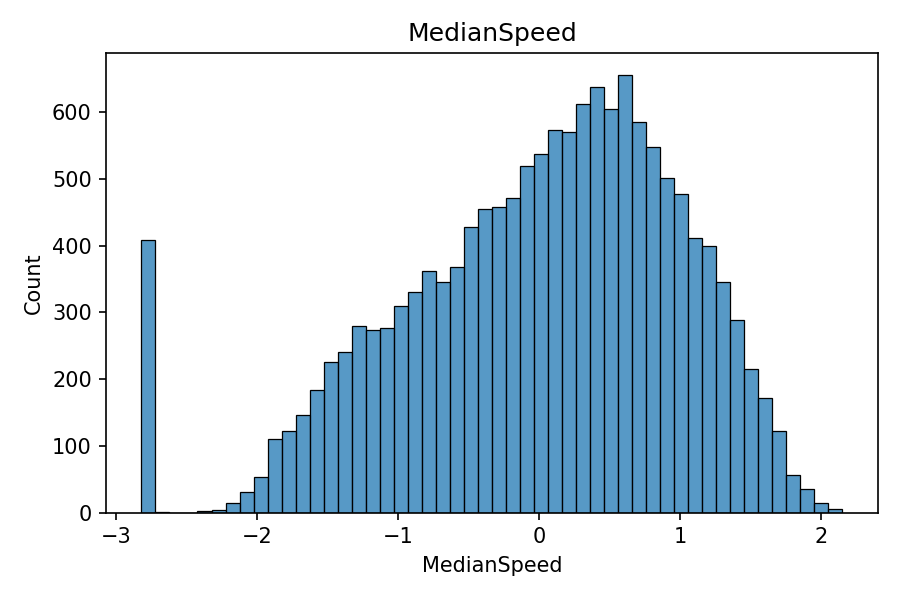
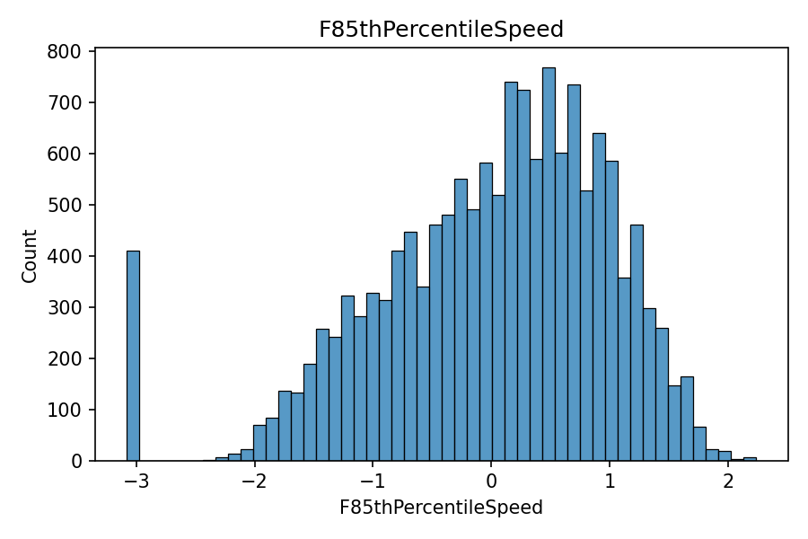
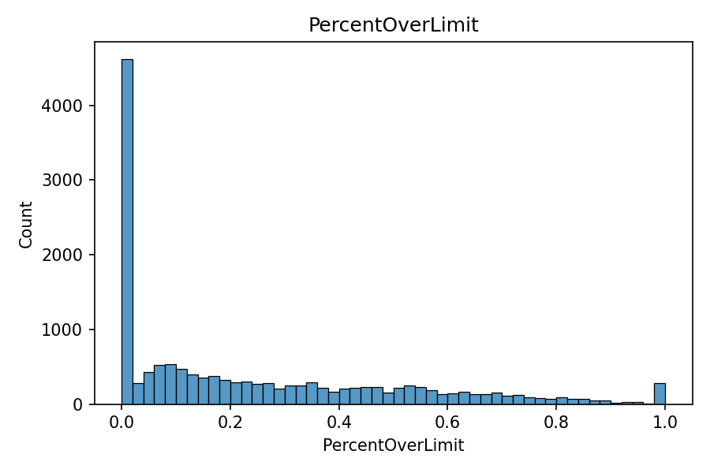
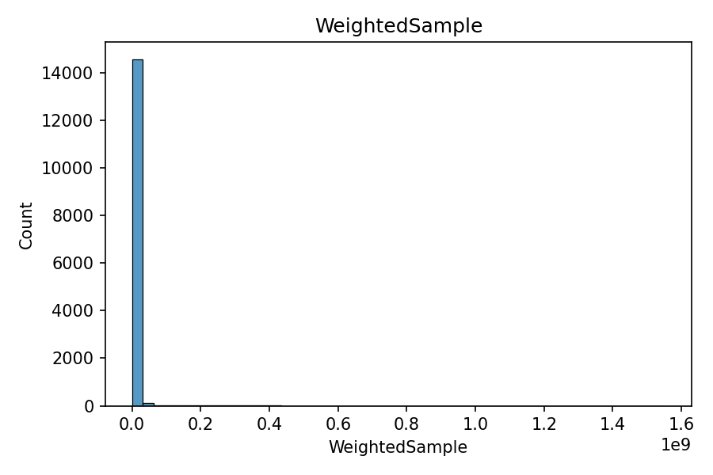
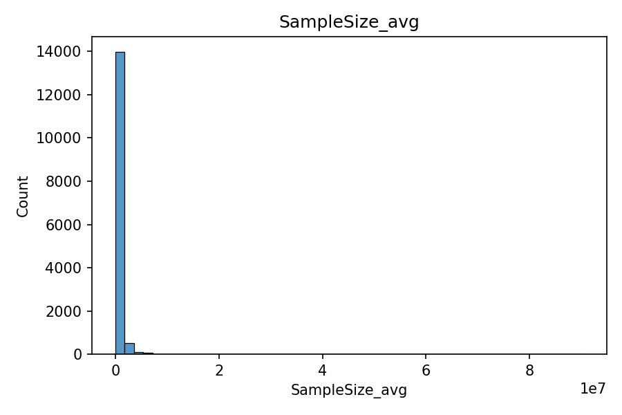
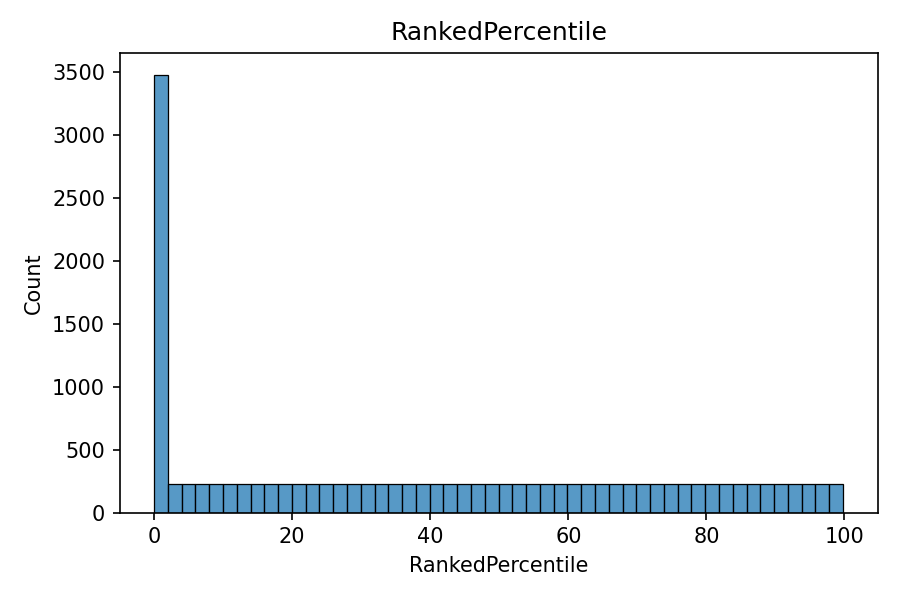
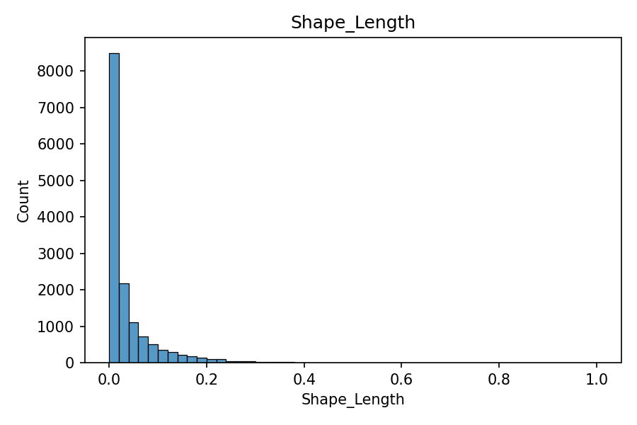
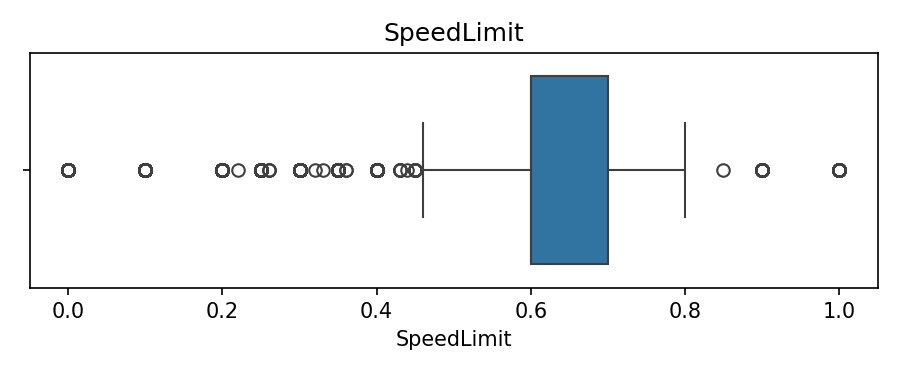
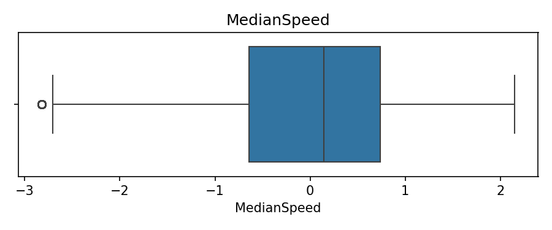
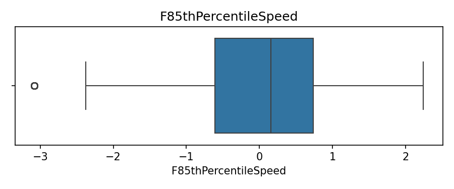
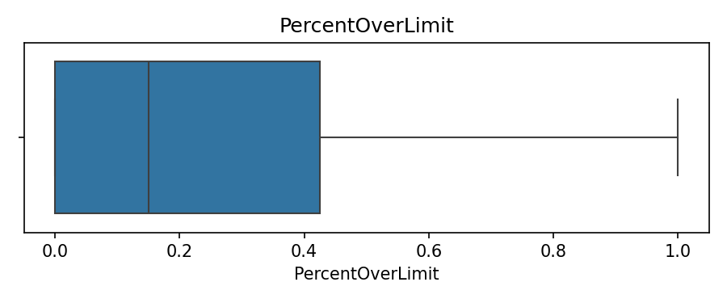
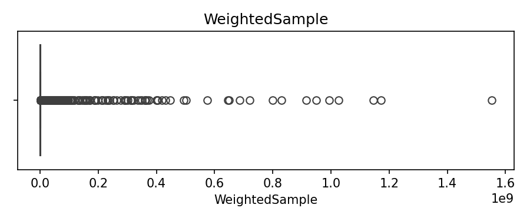
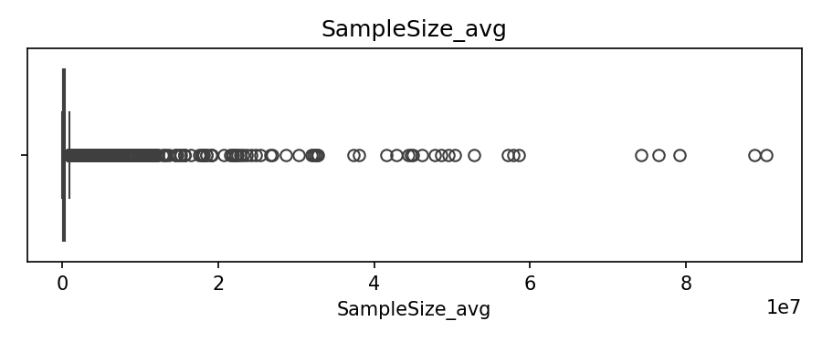
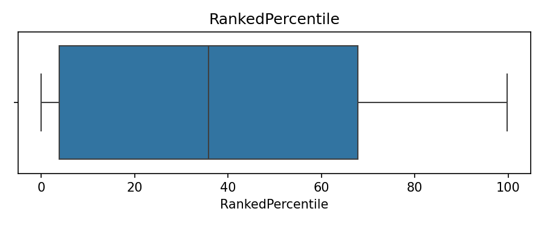
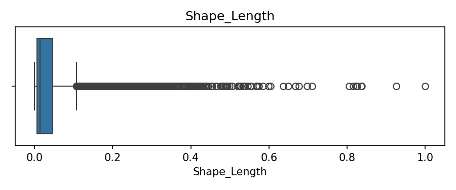
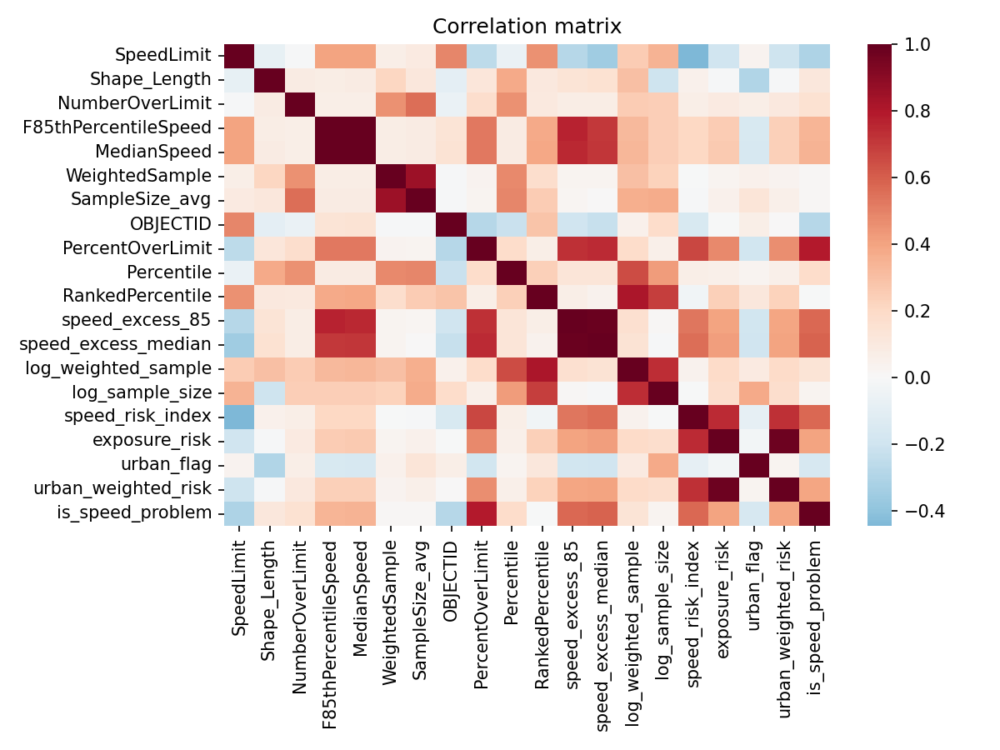